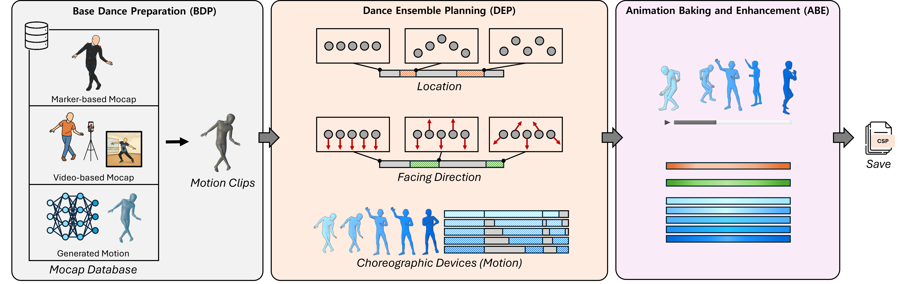

GOAT: Group Orchestration and Authoring Tool for Dynamic Dance Ensembles
Abstract
Group dance is a performance genre featuring intricate formations, synchronized choreography, and seamless transitions. Despite advancements in generative AI for single-performer motions, authoring group dances remains time-consuming and labor-intensive due to a lack of specialized tools. We introduce GOAT (Group Orchestration and Authoring Tool for Dynamic Dance Ensembles), a system that streamlines group dance creation and modulation with intuitive interfaces for professional and amateur choreographers. GOAT enables efficient authoring of complex group dances and provides 2D and 3D visualizations, offering a practical alternative to existing workflows relying on recorded videos. Its effectiveness is demonstrated through examples with 5 to 40 performers and validated via a usability test showing an average authoring speedup of 2 times for a 20-performer group performance task.
Pipeline

- Base Dance Preparation (BDP): Choreographers prepare a collection of base motion clips from various sources, including motion capture, video-based motion capture, generative models, and existing motion databases.
- Dance Ensemble Planning (DEP): The core authoring stage. Choreographers organize performers into dance ensembles and iteratively specify ensemble-level spatial and temporal modulations, including formations, facing directions, and choreographic devices, while retaining fine-grained control over individual dancers.
- Animation Baking and Enhancement (ABE): Synthesizes continuous full-body 3D motions from these sparse authoring specifications and applies post-processing to produce polished performances suitable for visualization, communication, and further refinement.
Group Dance Examples
Ablation Study
Motion Refinement for Video-Based Mocap
LoRA-based refinement improves root trajectories for some motion sequences reconstructed from video. In these cases, the motion generation model without LoRA produces root motion that is less consistent with the reconstructed body motion.
Performer Correspondence in Dance Ensemble Planning (DEP)
Our performer correspondence method assigns individual performers to candidate positions across successive formations, maintaining consistent performer identities throughout the performance. It seeks to keep travel distances short while reducing collisions during formation transitions.
Animation Baking and Enhancement (ABE)
Sparse ensemble-level spatial and temporal keyframes in DEP can leave detailed root and joint motions underspecified between keyframes. ABE fills in these details by combining base dance motions with synthesized transitions and smoothing the boundaries between motion segments, producing continuous full-body animation for all performers throughout the performance.
Spatial and Temporal Posture Diversification
When performers share the same base dance movements, their motions can appear overly uniform, particularly when dancing in unison. Our optional spatial and temporal posture diversification introduces subtle variations in joint angles and movement timing to reduce this uniformity and give the ensemble a more natural appearance.
Acknowledgement
We thank choreographers Lyon-eun Kwon, Seungjung Seong, and Aromi Lee for their valuable feedback and expert advice provided during interviews. This work was supported by the National Research Foundation of Korea (NRF) grant funded by Korea government (MSIT and MOE) (No. RS-2026-25500579), and by the Institute of Information & Communications Technology Planning & Evaluation (IITP) grant funded by MSIT under Grant Nos. RS-2025-25442338 (AI Star Fellowship Support Program, Seoul National University), RS-2021-II211343 (Artificial Intelligence Graduate School Program, Seoul National University), and IITP-2026-RS-2020-II201460 (ITRC: Information Technology Research Center).
BibTeX
@article{lee2026goat,
title={GOAT: Group Orchestration and Authoring Tool for Dynamic Dance Ensembles},
author={Lee, Yongwoo and Park, Sohyun and Moon, SeongUk and Won, Jungdam},
journal={ACM Transactions on Graphics (TOG)},
year={2026},
url={https://your-domain.com/your-project-page}
}